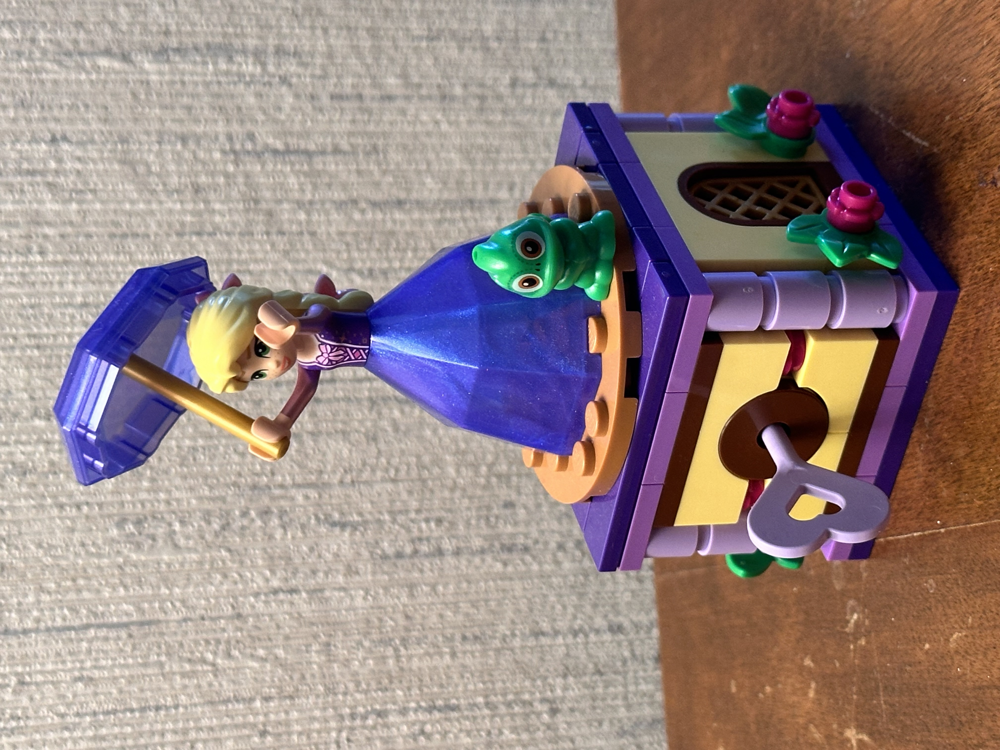
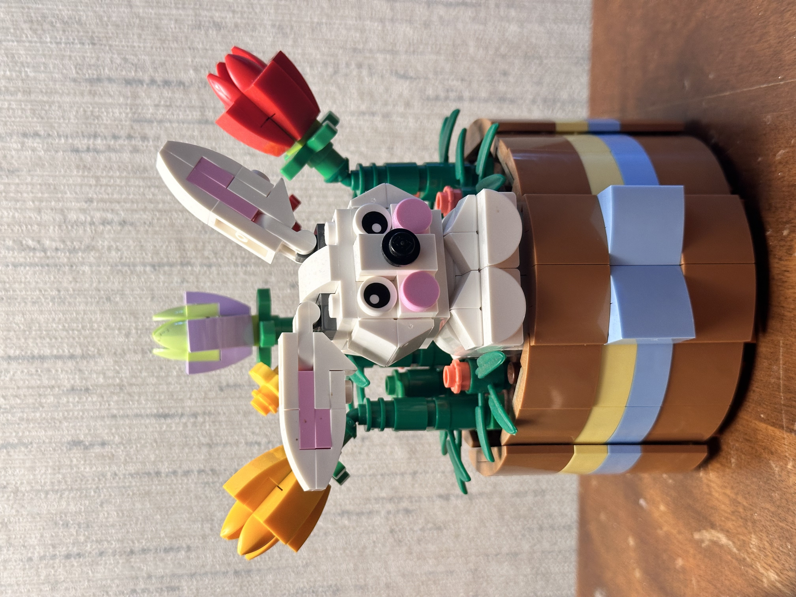
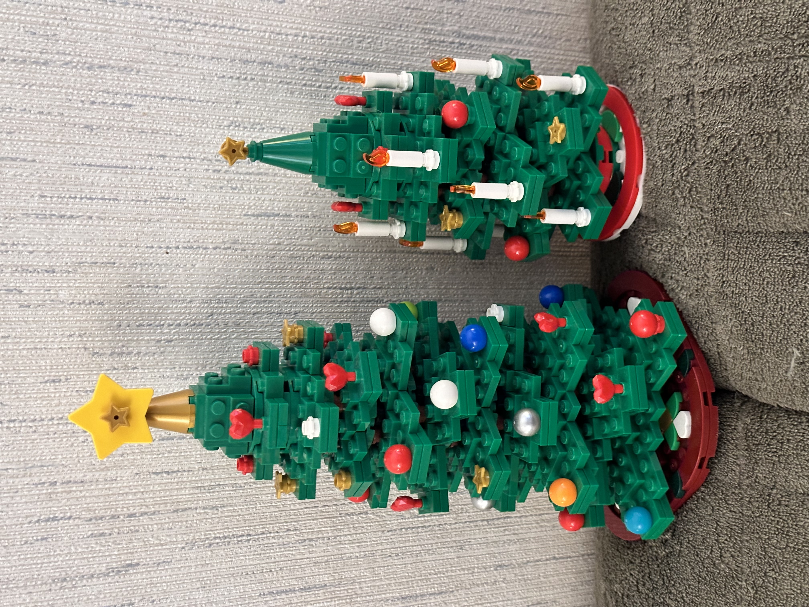
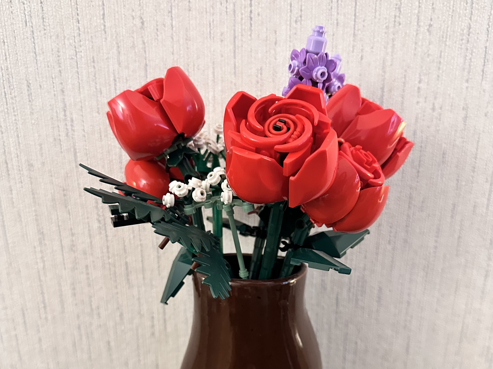
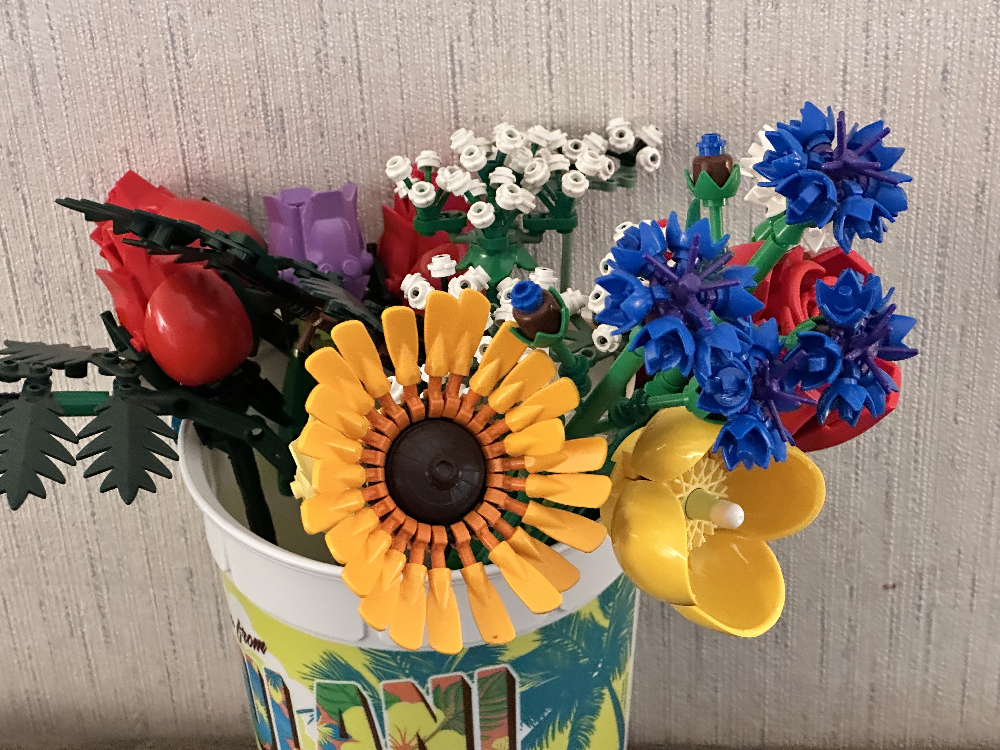

LEGO sets I've built
Vespa I & Vespa Mini

Courtesy of: Matthew's iPhone
Tangled

Courtesy of: Matthew's iPhone
Easter basket

Courtesy of: Matthew's iPhone
Double Christmas

Courtesy of: Matthew's iPhone
Rose Bouquet

Courtesy of: Matthew's iPhone
WildFlowers Bundle

Courtesy of: Matthew's iPhone
Extra Floral Photos

Courtesy of: Matthew's iPhone